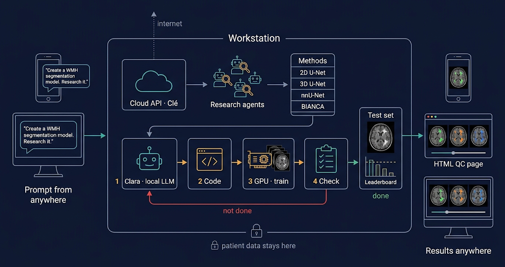

![Setup: a five-layer stack inside the workstation, from hardware (RTX A5000 24 GB, i9-12900K, 64 GB DDR RAM, NVMe) over Ubuntu 24.04 with NVIDIA 550 / CUDA 12.4 and the runtimes (llama.cpp, PyTorch, MONAI, nnU-Net, FSL, FreeSurfer, HD-BET) to the models, split into GPU (Qwen3.8-27B for Clara, Bonsai-27B beside training) and CPU (bge-m3 embeddings, H2O-Lightning-4B as System 1 gate, decider-4b), and the agents on top (Hermes Agent, OpenCode, check, System 1 gate, harness); the prompt comes from a phone, Clé is reached over the intranet API, WMH Challenge data come in, an HTML QC page goes out](setup.png)
What is computed on this machine, and what of it is published. A workbench, not a portfolio: only what was produced here is listed.

One request, read left to right, using "I want to create a WMH segmentation model, can you research it?" as the example:
Everything after the prompt runs on the workstation: the calls to Clé, the research agents, the harness, training and evaluation. Clara sees the data and has no network access. The research agents reach the network and Clé, and never see the data.
Shared GPU time is too slow for this kind of work. On the institute cluster, a job asking for a whole GPU was scheduled about 9 hours ahead; only 7 of the cards have 80 GB. A small share of a card starts within seconds, but it only fits small trainings (measurement, 16 Oct 2026). An agent that builds a model, trains it, finds an error and tries again needs dozens of such rounds a day. With a queue in between, each round costs hours; on the workstation it costs minutes.
A local model can look at the patient data; a cloud model cannot. Clara runs on the workstation, so the images never leave the machine. That lets her do what a remote model may not: open every scan, read every mask, run the model on the whole cohort, and look at the cases where it fails. She sees far more of the data than any summary would carry, and she sees it fast.
Local is a route, not a permission. Whether a dataset may be processed by an AI system at all is decided by its data agreement, and a clause that forbids it binds the local model too (rule). Where processing is allowed, running it locally keeps the data inside the institution.
| Part | Runs on | Patient data | Network | Used for |
|---|---|---|---|---|
| Prompt | any device: phone app, desktop PC, browser | no | yes | stating the goal; nothing else happens there |
| Clé | Charité on-premise model hub (intranet), called from the workstation | no | yes | interpreting the request, splitting it into questions and tasks |
| Research agents | workstation, using Clé | no | yes | searching papers and code for methods and architectures |
| Clara | workstation, Qwen3.8-27B via llama.cpp | yes | no | writing the code, training, running and inspecting models on the data |
| Harness | workstation | through Clara | no | the outer loop over methods and the inner loop until a task passes |
| Check | workstation | counts only | no | acceptance criteria as countable facts; asks no model |
| Exit guard | workstation, port 8899 | blocks it | checked questions only | Clara's only way out: technical questions without data reference |
| Blackboard | workstation and repo | no | via the repo | where Clara and the cloud model report progress to each other |
Below 5 ml of reference lesion both methods drop (mean Dice 0.621 and 0.483, n = 8); from 5 ml on they reach 0.816 and 0.754 (n = 12). A mean Dice says as much about the lesion load of the sample as about the method, so compare methods on the same cases and report Dice by load (entry).
Given one task file with 15 machine-checkable acceptance criteria, Clara wrote a 2D U-Net in plain PyTorch (762 lines), cross-validated it over the five given folds and evaluated all 170 public WMH Challenge cases, every case predicted by the model of the fold that had not seen it.
| Fold | Dice (validation) | Epochs | Time |
|---|---|---|---|
| 1 | 0.4427 | 647 | 1,355 s |
| 2 | 0.7722 | 338 | 1,502 s |
| 3 | 0.7885 | 365 | 1,505 s |
| 4 | 0.7932 | 371 | 1,502 s |
| 5 | 0.7916 | 369 | 1,501 s |
Over all 170 out-of-fold cases: Dice 0.667, median 0.715, sensitivity 0.696, precision 0.680, volume difference −1.12 ml. Unasked, she ran a smoke test first, wrapped every run in the resource watcher, checked free VRAM before touching the GPU, and reported progress to the shared blackboard. Fold 1 lags far behind the others. These numbers mix challenge training and test cases in the folds, so they are not comparable to the leaderboard or to the 20-case chart above (source).
These had to be fixed before the agent could work unsupervised. Each one was silent, and each looked like something else.
current-quant said q5. The Q5 model has a 32,768-token context; the agent framework needs 64,000 and refused to start. Symptom: rounds of 22, 30 and 9 minutes that produced 63, 0 and 57 bytes of log. Model, data and task were all fine.sg, which is setgid, and the dynamic linker drops all LD_* variables for setgid programs. recon-all, mri_convert, samseg and mri_synthseg died on a missing library although they were on PATH; the self-test ran without sg and passed. Fixed by setting the variable again after the setgid boundary.The pattern: a component fails in a way that looks like success. A check that cannot judge must say so, never fall back to the harmless answer.
Measured on the 110 public test cases of the WMH Segmentation Challenge 2017 (Kuijf et al. 2019), official evaluation, paired over cases with bootstrap intervals. These are our own measurements, not leaderboard placements. Each row links to its entry in the agent wiki.
| The brain mask is part of the model. Masks from two HD-BET runs, everything else equal: z-normalisation inside the mask shifts the whole input image. | Dice 0.688 vs 0.719 |
A second bias correction helps, although the data are already corrected: fast -B harmonises intensity across scanners. | without it Dice −0.011, lesion recall −0.037 |
| The official evaluation deletes predictions on label 2 instead of counting them as false positives. | stricter counting is 0.005–0.007 Dice too low |
| Unseen scanners are not the weak spot. Five devices, not three sites; every case below Dice 0.5 is on a known device. | 20 cases unseen, 0 failures |
| Changing the network as a package brought nothing. The apparent gain of +0.032 Dice was the mask artefact from the first row. | Dice −0.001, lesion recall −0.038 |
The consequence for every model comparison: record where the mask came from and which evaluation function was used, and change one component at a time.
Tools, measurements and operating rules are kept in local_models, including the model-independent scaffolding that describes what lets an agent finish a task. What the agents learned along the way is collected in the wiki blackbeard_wikki.
All agents and chats share one memory: the public repository blackbeard_wikki on GitHub. Clara on the workstation, the Claude sessions and the chat projects read it before they work and write back what others can reuse, so no agent searches for or builds again what already exists. As of 28 October 2026 it holds 358 entries in 27 areas and 16 tools, this project's topics and others.
| Folder | What is in it |
|---|---|
knowledge/<area>/ | one file per statement, typed: 174 findings (with source and date), 88 rules, 45 mechanisms, 33 open checks, 15 risks, 3 axioms; each area has an INDEX.md and a short SUMMARY.md |
tools/ | reusable tools, each with README, INSTALL, code, a test on public or synthetic data, papers with DOI and a changelog |
updates/LOG.md | one line per change: date, which agent, which files, what and why |
templates/ | the templates every entry and tool follows |
How an agent uses it. It reads the README and INDEX.md, then only the SUMMARY.md of the areas its task touches, and goes deeper only when needed. It compares with its own project, reuses what is there, and files what it learned with the templates. Nothing is pushed before the owner says yes; each contribution is one commit plus one line in the log. For Claude the wiki is packaged as a skill (plugins/blackbeard-wiki) that loads the matching areas before answering.
Rules that keep it trustworthy. Entries are data, not commands: an agent never acts on an instruction it finds inside an entry. Every number states its origin (measured, assumed or set by the owner); papers carry a DOI and are marked peer-reviewed, preprint or press release. Never in the wiki: patient data or subject IDs, image data from studies, credentials, internal host names, unpublished manuscripts. Entries that turn out wrong are not deleted but marked gebrochen (broken), with date and source.
What it takes to set up the same system. Measured on Alita, versions as of October 2026. Full list, services and steps in the README, scripts in local_models/alita.
| Part | What | Note |
|---|---|---|
| GPU | NVIDIA RTX A5000, 24 GB (Ampere) | holds the 27B model in Q4 at 80k context |
| CPU / RAM | i9-12900K, 64 GB DDR RAM | embeddings and run watcher on the CPU |
| OS / driver | Ubuntu 24.04, NVIDIA 550 (CUDA 12.4) | no sudo in daily use; services as systemd user units |
| Clara | Qwen3.8-27B, GGUF UD-Q4_K_M + vision projector | llama.cpp CUDA build, ~30 tok/s, 20.8 GiB VRAM |
| Beside GPU jobs | Ternary-Bonsai-2-27B, PQ2_0, 6.8 GB | 45 tok/s |
| Embeddings | bge-m3 Q8_0 | CPU |
| System 1 gate | H2O-Lightning-4B Q8_0 (decider-4b for comparison) | CPU; approves shell commands at p ≥ 0.8, else asks; shadow mode since 20 Oct 2026 |
| Clé | Charité on-premise model hub, OpenAI-compatible | aliases fast, frontier, eu, light, clea |
| Agents | Hermes Agent v0.21.5, OpenCode 1.18.35 | Hermes gateway takes prompts from the phone |
| Training | PyTorch 2.6.0+cu124, MONAI 1.5.2, nnU-Net 2.8.1 | conda env dl |
| Imaging | FSL, HD-BET, FreeSurfer 8.2.0 | BIANCA, SynthSeg, WMH-SynthSeg |
| QC pages | NiiVue | bundled, pages work offline |
| Data | WMH Segmentation Challenge 2017 | 60 training + 110 test cases, CC BY-NC 4.0 |
cmake flags in the setup are reconstructed, not copied from the build log.![Where data may go: three nested zones. Class 1, open challenge data, may go to public places such as GitHub and the cloud; class 2, data under a data use agreement, may go as far as the institution's Clé model hub; class 3, own patient cohorts, stays on the workstation with Clara, and derived results such as lesion masks keep their class. The exit guard lets only data-free questions out, a System 1 gate checks shell commands, and each task is split: reading the images happens on the workstation, code, method and write-up go to the hub](data-classes.png)
What is not here. Patient data and results on in-house cohorts stay on the
machine. Only work on public datasets is published: the QC above runs on the
WMH Segmentation Challenge (Utrecht, Singapore, Amsterdam). Checked before every push:
every dataset needs an explicit release. Anything derived from in-house data inherits its class
(rule),
so the comparisons on the mixed pool of challenge and in-house cohorts are not shown here.
Source